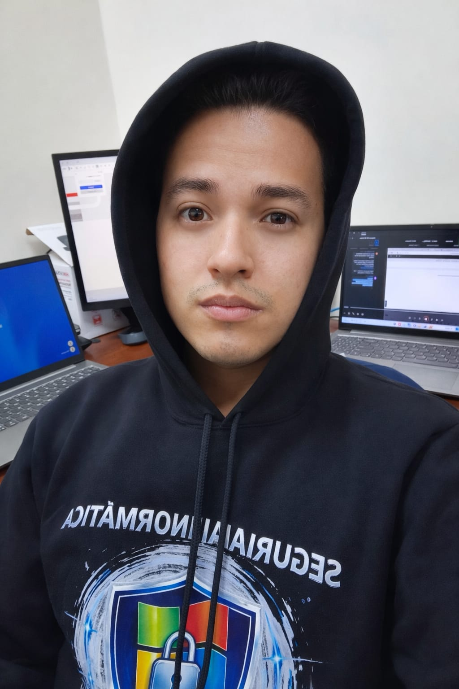

Mis datos:
| Alias / Usuario | : WinstXD320 |
| Especialidad | : Soporte Técnico & Helpdesk Nivel 1 |
| Intereses | : Ciberseguridad y Desarrollo de Software |
Acerca de mí:
Soy WinstXD320, especialista en soporte técnico con dos años de experiencia en el área de atención Helpdesk Nivel 1, resolviendo incidencias y brindando asistencia directa a los usuarios.
Me apasiona el mundo de la ciberseguridad y disfruto el desarrollo de software como un hobby en el que me dedico a crear herramientas y soluciones prácticas pensadas para facilitar el trabajo diario de las personas.
He creado este sitio web como un espacio personal para compartir mis proyectos con la visión de que, poco a poco, siga creciendo y aportando valor a la comunidad.
Estoy para servirle.

WinstXD320